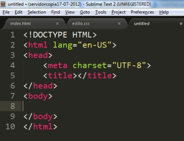

¿Qué es HTML?
Es el lenguaje con el que se determina el contenido de las paginas web, por medio de un conjunto de etiquetas que sirven para definir el texto y otros elementos.
Se creo con el fin de divulgar infromación por medio de texto o imágenes y en un principio no se penso para ser usado para el oscio.
¿Qué significan sus siglas?
HyperText Markup Language, en español lenguajes de marcas de hipertexto
¿Qué es HTML5?
Es la ultima versión de HTML, que contiene nuevos elementos, atributos y comportamientos.
¿Qué cambia?
Los paradigmas de desarrollo y diseño web con la introducción de etiquetas que permitan la reproducción de archivos de audio y video con soporte de diferentes codecs.
Tags para que los usuarios puedan dibujar contenidos en 2d y 3d.
Cambios para el diligenciamiento de formularios
¿Por qué nos beneficia HTML5?
La mayoria de contenido desarrollado para internet en multimedia de audio y video, se repoducia por medio de Flash (de la empresa Adobe), pese a que Flash Player es un gratuito, desarrollar contenidos tiene un alto costo debido a sus herramientas, por lo contrario, HTML5 permite desarrollar de forma gratuita.
Flash esta bloquedo en dispositivos moviles como iPhone y iPad, HTML5 si funciona a la perfección con estos dispositivos.
¿Qué navegadores soportan HTML5?
Se puede ejecutar en navegadores como Google Chrome, Safari y Mozilla Firefox.
Estructura de HTML5
Descibamos cada etiqueta de la estrucutura de HTML
• < ! DOCTYPE html > Lo primero que nos encontramos es la declaración El DOCTYPE variará según el tipo de documento realizado.
• HTML Tras declarar el tipo de documento, indicamos que iniciamos nuestro documento HTML. Esta etiqueta se cierra cuando finalizamos el documento. Vemos que lleva un atributo lang, esto sirve para indicar el idioma del documento.
• HEAD En un documento HTML tenemos una cabecera dónde colocaremos los metadatos de la página, el código JavaScript y el CSS que utilizará el navegador para renderizar la página.
• META CHARSET Obligatorio en HTML5, informa el juego de caracteres del documento, debería ser siempre utf-8. Como todo metadato debe ir dentro del head.
• TITLE Es un tipo de metadato especial que nos proporciona el título de la página. Por motivos de posicionamiento (SEO) se recomienda que el meta title sea parecido al H1 del documento y a la URL de la página.
• BODY En su interior tendremos el contenido de la página.
HTML
HTML no es un lenguaje de programación, esto debes tenerlo muy en claro desde el principio, HTML es un lenguaje de marcado de hipertexto o “HyperText Markup Language” por el desarrollo de sus iniciales en inglés, básicamente este lenguaje se escribe en su totalidad con elementos, estos elementos están constituidos por etiquetas, contenido y atributos, que explicaremos de una manera más detallada en algunas líneas más abajo.
La primera versión de HTML fue publicada por un científico de la computación británico llamado Timohty John Berners-Lee en 1991 y contenía inicialmente pocos elementos. Sobre Tim, debes saber también que es conocido como el padre de la web, es fundador de la W3C (World Wide Web Consortium), creador del protocolo HTTP (HyperText Transfer Protocol), creador de la URL (Uniform Resource Locator) y creador del primer navegador web.
Sobre la historia de HTML, en 1995 se publicó el estándar HTML 2.0, el primer estándar oficial de HTML. En 1997 se publicó la versión HTML 3.2 y es la primera especificación HTML publicada por la W3C.
HTML es un lenguaje formado por elementos, un elemento se ve como por ejemplo:"< P id="parrafo" >Contenido del elemento p < /p >", los elementos nos ayudan a estructurar y dar significado a las partes de un documento HTML, estos elementos a su vez están conformados por contenido, etiquetas y atributos.
Las etiquetas nos sirven para delimitar el inicio y el fin de un elemento, como en el ejemplo, vemos un elemento que utiliza la etiqueta de apertura. para indicar el inicio de un párrafo, y la etiqueta de cierre para indicar el fin de un párrafo.
El contenido de un elemento pueden ser caracteres, comentarios u otro elemento delimitado dentro de las etiquetas de inicio y de cierre, en el ejemplo pueden ver que el contenido es: “Contenido del elemento p”.
Sobre los atributos de un elemento debes saber que siempre se expresan en la etiqueta de inicio y tienen un nombre (Ej. id) y un valor (Ej. parrafo), en el ejemplo vemos el uso del atributo id con su respectivo valor.